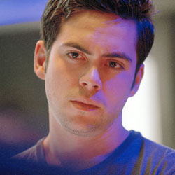

| Home | The Doctors | The Companions | The Villains |
|
|||
|
Adam MitchellAdam Mitchell is a fictional character in the British science fiction television series Doctor Who, played by Bruno Langley. Adam is introduced in the first series of the programme's revival as the second television companion of the Ninth Doctor (Christopher Eccleston). However unlike the Ninth Doctor's primary companion, Rose Tyler (Billie Piper), who provided an effective human contrast to the Doctor's centuries-old alien, Adam was created to provide an example of an inept time traveller. The character is introduced as a boy genius from the year 2012 who attracts the attention of the Doctor's traveling companion Rose after she and the Doctor meet him in his place of work. Despite Rose's willingness to accept Adam as a fellow traveller, the Doctor is sceptical. After Adam attempts to use information from the future for his own gain he throws Adam out of his time machine, the TARDIS. This was the first example of the Doctor forcing a companion to leave because of negative behaviour. Adam was created during executive producer Russell T Davies original pitch to the BBC as part of his plans to revive Doctor Who for the channel. Though established early in the series' planning, Adam was always intended to be a short-term character. Though reviewers generally reacted negatively to the character, Adam's role as a foil to the stock companion figure has been praised alongside the moral lessons of his departure. |